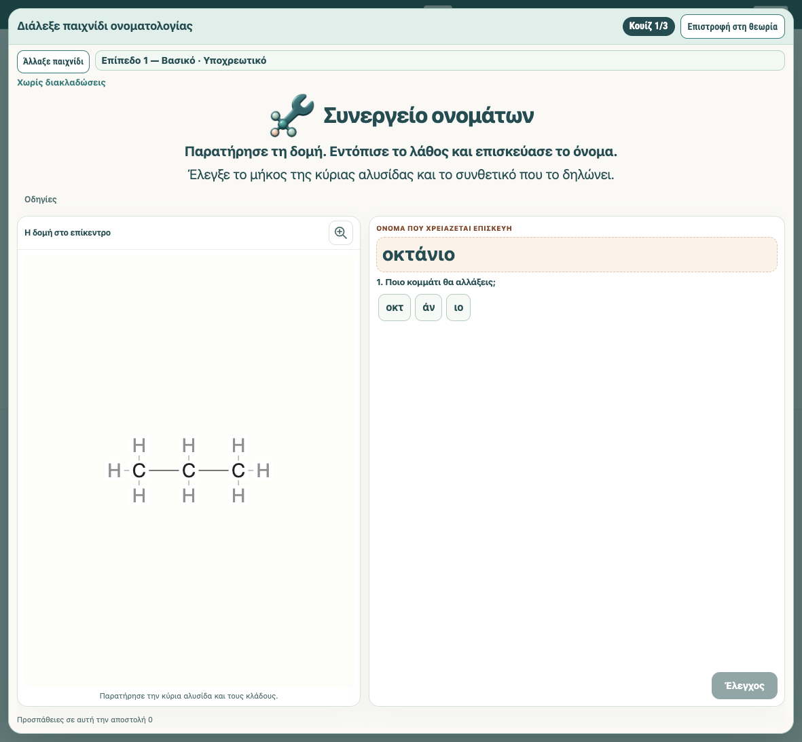
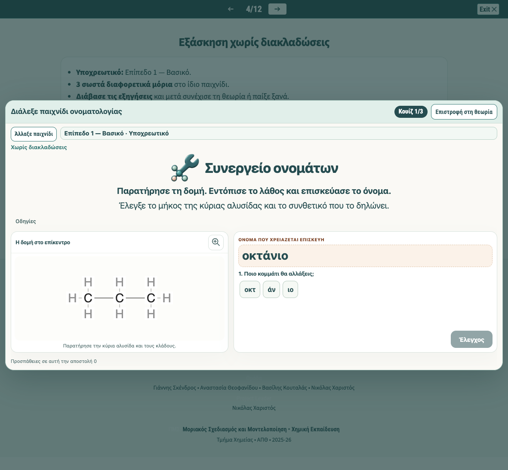
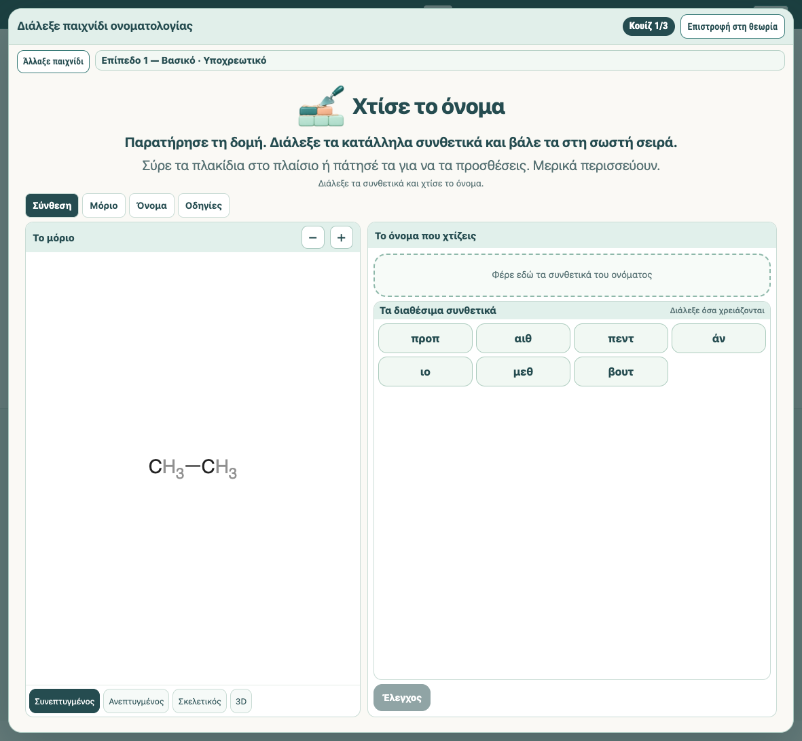
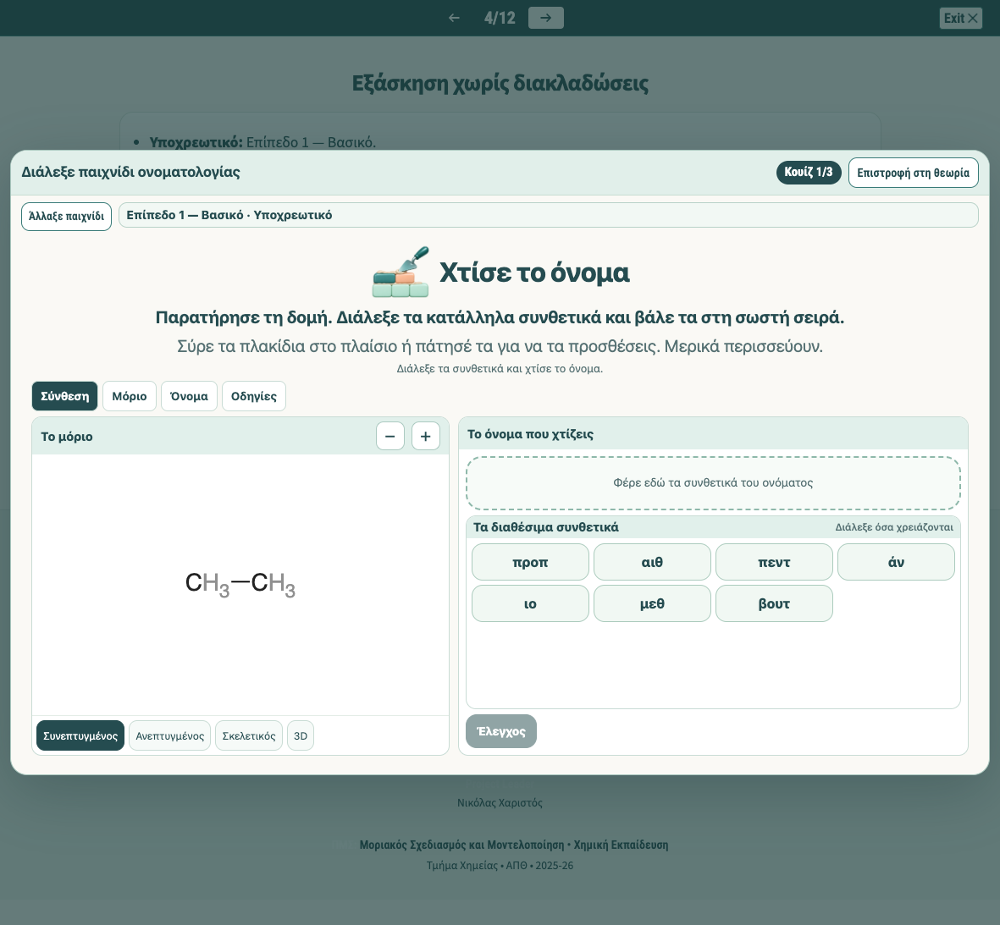
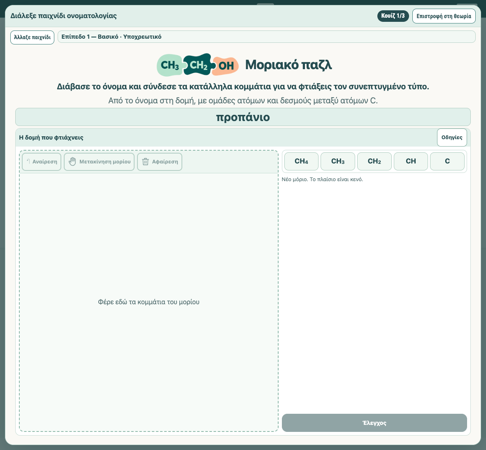
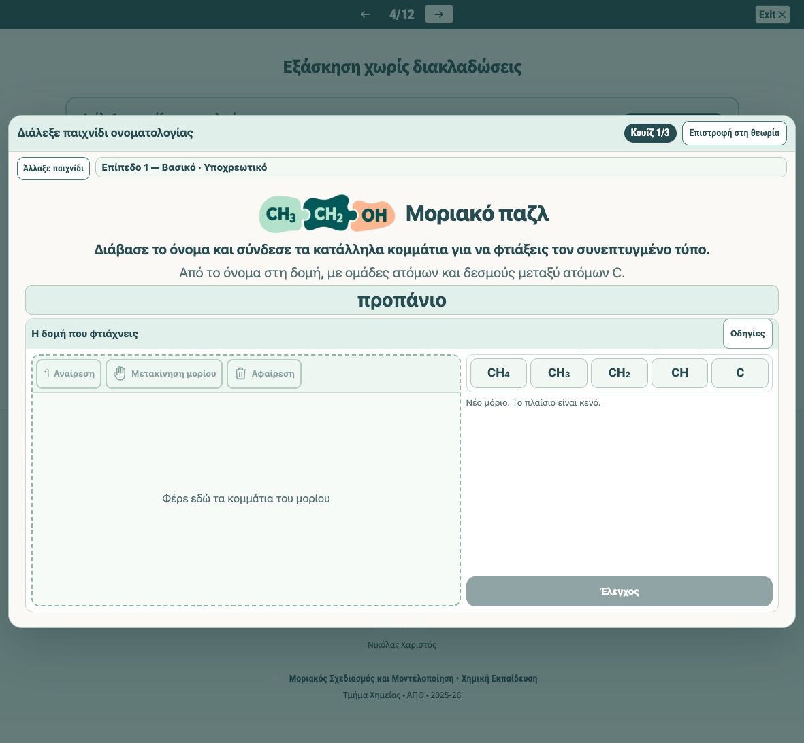
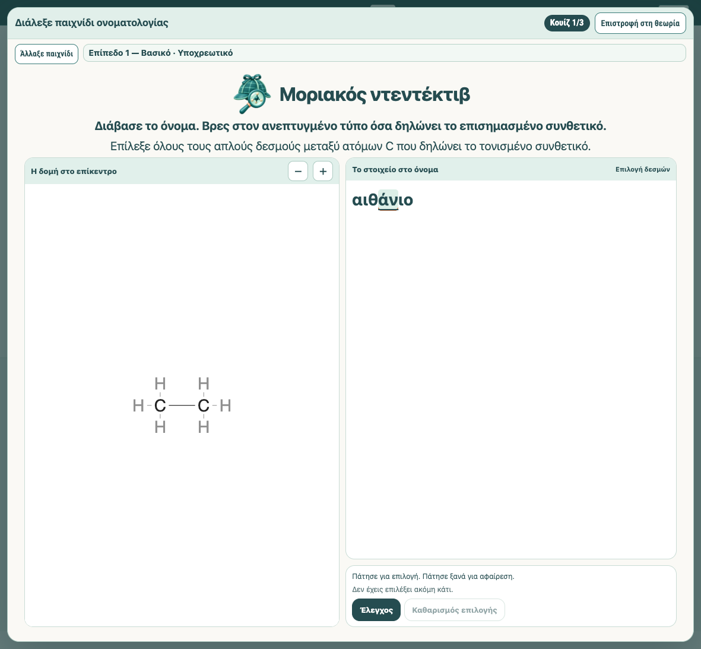
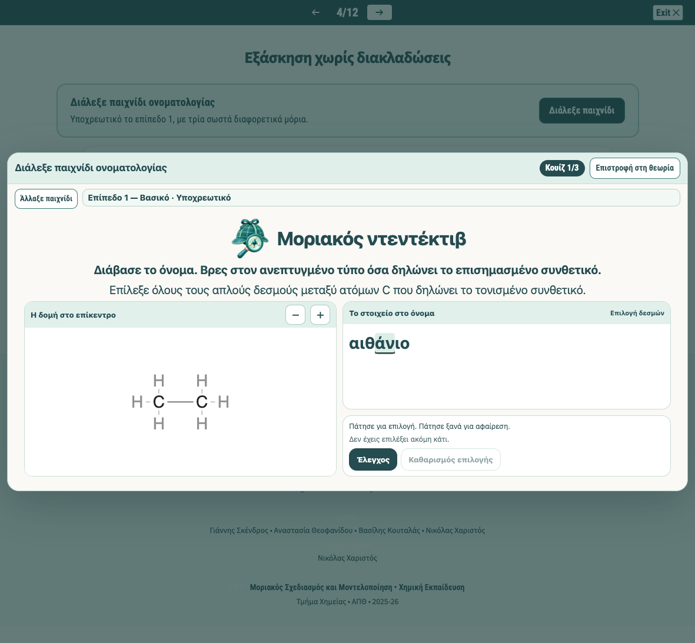

Πραγματικά στιγμιότυπα από την ίδια άλυτη ερώτηση κάθε παιχνιδιού σε παράθυρο 1181 × 1093. Πατήστε σε μια εικόνα για το αρχικό αρχείο. Οι εικόνες δεν είναι διαδραστικά παιχνίδια.
Η σύγκριση αφορά το αρχικό ύψος και την ορατή διάταξη. Οι έλεγχοι απαντήσεων, επαναφοράς και αλλαγής μεγέθους τεκμηριώνονται χωριστά.







